PROJECT SATISFY
With the purpose of become the Group Otaviano Pivetta, in a company with professionals qualified and satisfied, we are instituting Programs that aim at to the professional qualification and the personal satisfaction of the collaborators in the aspects described in the presentation básica of those Programs:
1. It PROGRAMS TO QUALIFY
Has like objective Qualify the collaborator already in the admission. Always qualifying personnels in excess, for in cases emergenciais arrange of personnels qualified in the list of wait.
2. It PROGRAMS Q. P. I. (INTELLECTUAL PROFESSIONAL QUALIFICATION)
It has like object the intellectual, professional qualification and valorização human and financier of the collaborator, através of the viabilização of the intens it follow:
• Lectures of Motivation;
• Courses of Qualification and Aperfeiçoamento (administered by technicians of sector and companies fornecedoras of machines and equipment);
• Courses / Lectures of Security in the Work;
3. It PROGRAMS TO COORDINATE
It has like objective maintain you lead them brought up to date regarding technical news of work and of relationship empregador employed, através of courses and lectures in the matters it follow described:
• Taken of Decisions;
• Flexibility for avoid unnecessary frictions boss x employed;
• Avoid exaggeration in the daily journey of work of the staff, (staff tired produces below on average, has bigger propensity it suffer or cause accidents of work and bigger cause erodes in machines and equipment);
• Motivation;
• Planning (Foresees and Program the future needs of personnels);
4. It PROGRAMS TO INTEGRATE
It has like objective promote seminaries between the leaderships of area between companies of the sector:
• AMAGGI;
• SLC Agricultural;
• FIAGRIL;
• Other.
5. It PROGRAMS TO FEED HIMSELF WELL
Aiming at guarantee the welfare feed, of all of the collaborators the Group Otaviano Pivetta, has dining hall in his units, with menu defined by nutricionista and sustenances of excellent quality.
6. MANUAL OF CONVIVÊNCIA (DEMONSTRATIVE OF THE POLITICA FUNCTIONAL)
It has the purpose of put the collaborator of the Company, apar of his opportunities professional, his rights, its obligations and norms of the Company, already in the its admission.
7. It PROGRAMS R. C. C. (RULE IN THE CONTRATAÇÃO OF COLLABORATOR)
It has for purpose establish a general rule in the distribution of the collaborators upon will enter the Company:
• Program Qualify;
• Medical Exam Admissional;
• Presentation of the documentation required by the Charge;
• Manual of Convivência (Demonstrative of the Political Functional one of the Company);
• Encaminhamento of the Department of Security in the Work (Unit Ribeiro of the Heaven);
It PROGRAMS TO COORDINATE
Local: Farm Ribeiro of the Heaven
Matter: Leaders Development Seminary
Participants: 30 collaborators
Date: 02, 03 and 04 of April of 2004.
Objective: This Seminary is going to work and develop all of the levels of management of the group and the leaderships, seeking develop you lead focados in the present and new needs of the market.
Description: Of The co-owner between the Group and the company Proativa (Port Cheer Up), was carried out the Team Leaders Development Seminary, that counted on the participation of leaders of all the Areas of Action of the Group. In the event were carried out lectures and corporate games, for obtaining of better assimilação of the content proposed.
They turned out: Leaders more focados in the real needs and challenges of the everyday life, with vision more dynamic in the resolution of conflicts and in the aprimoramento of their team of work.
| 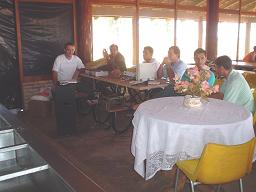 | 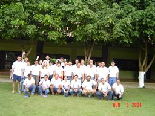 |
It PROGRAMS Q. P. I. (INTELLECTUAL AND PROFESSIONAL QUALIFICATION)
Local: Farm Holy Land, Ribeiro of the Heaven and Holy Faith.
Matter: Lecture Show – Transforming Companies and Persons
Participants: all of the collaborators of the Group.
Lecture Administered By: Moacir pear tree Junior
Date: 05, 11 and 12 of June of 2004.
Objective: THE event had as main objective develop a work that result the excellence, motivating the collaborators it develop his abilities and formation, contributing for positive results, company persons.
Description: THE event was administered by the Educationalist Moacir pear tree Junior of Big Field – MS, the Lecture Show counted on audiovisual resorts, dynamic and cooperative games.
They turned out: Provided intellectual development of the collaborators and caused to full satisfaction and motivation of the mesmos.
| 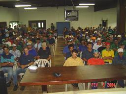 | 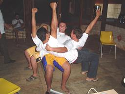 |
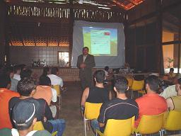 |
It PROGRAMS Q. P. I. (INTELLECTUAL AND PROFESSIONAL QUALIFICATION)
Local: Farm Ribeiro of the Heaven, Holy Farm Faith.
Matter: Correct and Dependable Utilization of Machines and Agricultural Implements
Participants: 80 Users of Machines
Date: 15 of January and 05 of February of 2004.
Objective: it Leave the Users of Machines informed about the risks to that are displayeds.
Description: was administered Lecture of Dependable Use of Agricultural Machines, where were approached you fear like the most frequent risks, insecure and dependable acts, as well like to correct utilization of EPIs.
They turned out: Use of correct form of the EPIs, what has contributed with positive results for avoid the occurrence of grave accidents. Beyond that guaranteeing that all the activities are developed with efficiency, productivity and security.
| 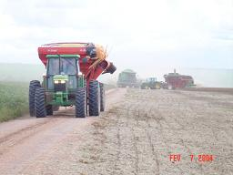 | 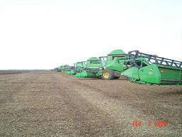 |
It PROGRAMS TO INTEGRATE
Local: Farm Ribeiro of the Heaven.
Matter: DAY OF FIELD – Cotton “Safrinha”
Participants: 120 collaborators.
Date: 12 of June of 2004.
The Day of Field was carried out by the Group in co-owner with companies conceituadas in the branch of Defensivos agricultural, come back to the culture of the Algodoeiro. In this day were shown up the most recent technologies of battle to the pests, techniques of plantation, adubação and new ranges.
The event counted on the companies professionals presence of the sector, producing and liberal professionals.
As main objective of this event we be able to cite the fact of be transfered to all of the presents to the technologies that are in use and that see presenting positive results for alavancar still more the regional output.
They were presented in this event defensivos less aggressive and more selective, aiming at to the preservation of the environment.
| 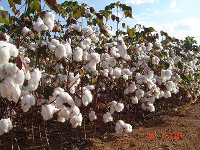 | 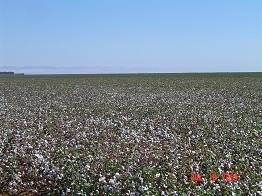 |
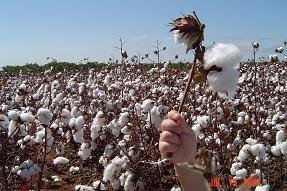 |
It PROGRAMS Q. P. I. (INTELLECTUAL AND PROFESSIONAL QUALIFICATION)
Local: Field of Tests of the Pirelli
Matter: Defensive Direction Training “BMW Driver Training”
Participants: 01 collaborator
Date: 16 of May of 2004
The defensive Direction Training was carried out in the Field of Tests of the Pirelli located in the city of Paulínia state of São paulo, and as the representative of the Group the Mr. Emilio Cezar White Teles, Manager of Output can carry out radical maneuvers to embroidery of a BMW.
The responsible professional by the training was the Mr. César presenter of the High program Sport of the Net Globe and Pilot of the Thousand Miles.
| 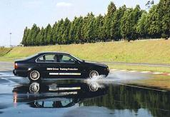 |
| 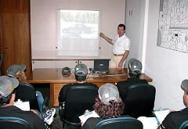 |
It PROGRAMS Q. P. I. (INTELLECTUAL AND PROFESSIONAL QUALIFICATION)
Local: Farm Ribeiro of the Heaven
Matter: Training of Battle to the Fire
Date: 03 of May of 2004.
Participants: 110 collaborators
Objective: it Prepare the collaborators, for avoid incidents with flammable products.
Description: Practical Training of Battle to the Fire, administered by the Body of Firemen of the Unit of the city of New Mutum - MT jointly with the Technicians of Security of the Work of the Group.
They turned out: Today we have conscious collaborators that are prepared for prevent incident with fire, but that also are prepared for fight misfortunes that by happiness come it occur.
| 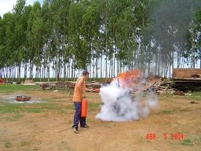 | 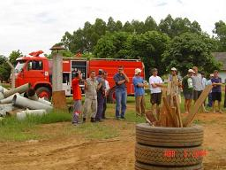 |
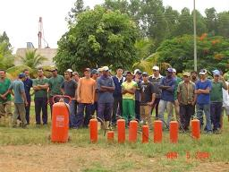 |
It PROGRAMS Q. P. I. (INTELLECTUAL AND PROFESSIONAL QUALIFICATION)
Local: Farm Ribeiro of the Heaven, Holy Faith and Holy Land.
Matter: Lecture of Security and Health in the Field
Participants: 50 collaborators
Date: 04 of February and 29 of June of 2004.
Objective: it Protect the health of the collaborators, during the deal with products fitossanitários and chemical products in general, created the Program of Security and Health in the Field.
Description: THE program comes it include all of the staffs that develop activities where occur to the presence of some agent fitossanitários or chemical, promoting to practical of security and correct use of the EPIs. The Program is based in lectures, training and orientation, where are raised and identified the existing risks. They are approached the harmful effects to the health provoked by these products. Also they are stimulated practices coletivas of security and correct use of EPIs.
They turned out: in the last periods were not recorded connected accidents to the incorrect use of these products, improving and guaranteeing the quality and the security in the work.
| 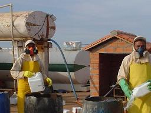 | 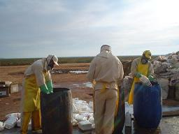 |
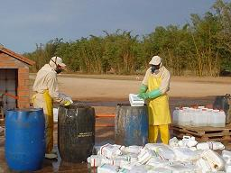 |
It PROGRAMS Q. P. I. (INTELLECTUAL AND PROFESSIONAL QUALIFICATION)
Matter: Internal Commission of Work Accidents Prevention (CIPA).
At present the Group presents Internal Commissions of Prevention of Accidents, integrating at present the Farms Ribeiro of the Heaven and Holy faith.
Between the two Farms we count on approximately 24 members, that unite regularly, in already predicted dates in annual calendar, where are discussed questions connections to the security of the work, you have as: presentation of preventive measures, analyzes of accidents of work, correction of risks.
To CIPA, jointly with the sector of Security of the Work, concerned in be maintained atuante, improving the entrosamento between the members it came create Commissions of Work – CT, with the purpose of divide task and increase the responsibility of the members.
They were created four Commissions of Work: - Commission of Accidents; - Commission of Aid to the Rough one; - Commission of Fiscalização; - Commission of Events.
As they turned out we reap to valorização the function of the CIPA and their members before the workers that pass collaborate it straightly in the actions of prevention.
| 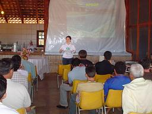 | 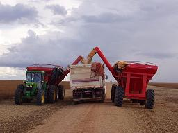 |
It PROGRAMS Q. P. I. (INTELLECTUAL AND PROFESSIONAL QUALIFICATION)
Local: Farm Ribeiro of the Heaven, Holy Faith and Holy Land.
Matter: 1.º SIPAT (Internal Week of Work Accidents Prevention
Participants: 385 collaborators
Date: 29 of May, 5 and 12 June of 2004.
To 1º Edition of the SIPAT –Semana Internal of Work Accidents Prevention influenced the professionals it will seek qualification. They were approached you fear as: Loss Auditiva, First Helps, Training for Cipeiros, Lectures Motivacionais.
First Helps – THE training of First Helps was carried out by the Assistant of Nursing - Renato Nunes of Souza, in the day 29 of May, that counted on the participation of approximately 150 collaborators.
With objective of orient the collaborators in situations of emergency, mainly in grave cases, were approached matters as: cardiac arrest, respiratory, faints, queimaduras, fractures, bite of verminous animals, transport of rough, between others.
Beyond all the theoretical orientation also were carried out practical training, where did everybody participate.
It loses Auditivas - we Count on the Training about Use of Protection Auricular individual and Coletiva, administered by the Fonoaudióloga Drª Gislene A. Negrão Cristóvão, with the participation of approximately 60 collaborators.
In this training were approached the following matters: importance of the use of EPIs, time of exposition to noises, kinds of noise, wounds in the ear, effects of the noise to the health, signs of losses auditivas, between others.
Training for Cipeiros - With the possession of the Internal Commission of Prevention of Accidents of the Holy Unit Faith, carried out herself mandatory training to the components of the Commission, in agreement predicted in the Norms you Will Regulate - NR 05.
| 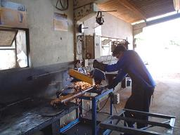 | 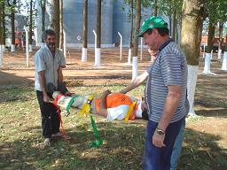 |
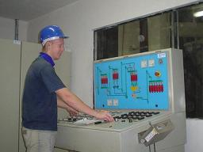 |
| 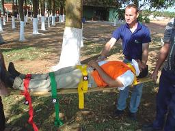 | 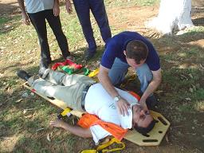 |
It PROGRAMS Q. P. I. (INTELLECTUAL AND PROFESSIONAL QUALIFICATION)
Local: Farm Ribeiro of the Heaven and Holy Farm Faith
Matter: Training Security in Warehouses of Grains
Participants: 67 collaborators
Date: 08 of January and 04 of March of 2004
Objective: it Maintain them collaborated apar of the existing techniques and of the necessary knowledge, for avoid the occurrence of accidents during the storage of the output.
Description: By The fact of the Storage of Grains have revealed an extremely favorable environment to the occurrence of accidents. They were identified the biggest existing risks in the environment of work, a time identified these risks was attributed the due training and the correct utilization of the EPIs (equipment of individual protection).
They turned out: With the training, was established that the collaborators cleared is not exposed to unnecessary risks, reducing sensibly the possibility of accidents.
| 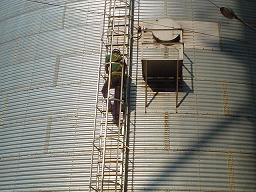 | 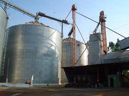 |
| 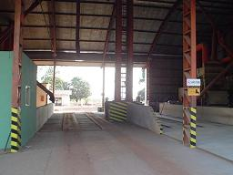 | 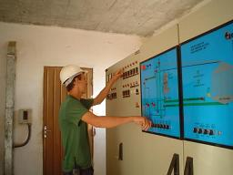 |
It PROGRAMS TO FEED HIMSELF WELL
Local: Farm Ribeiro of the Heaven, Holy Faith and Holy Land.
Matter: Training and Aperfeiçoamento
Participants: all of the collaborators of the area of food
Date: Periodicamente.
Objective: it Maintain them collaborated healthy and well nourished, focusing the productivity with quality.
Description: Aiming at guarantee the welfare feed, of all of the collaborators, the Group count with dining hall of high standard of quality in his units, with three daily meals with menu defined by nutricionista, sustenances of excellent quality and professional periodicamente coached.
They turned out: healthy Team and well nourished, with full satisfaction in the execution of their daily activities.
| 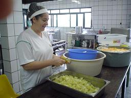 | 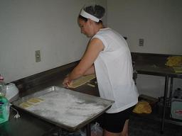 |
| 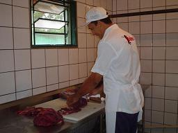 | 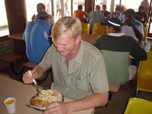 |
It PROGRAMS TO QUALIFY
Local: Farm Ribeiro of the Heaven
Matter: Accompaniment and Training of New Staffs
Participants: 11 collaborators
Date: 08 and 09 of June of 2004.
Objective: it Count on collaborating cientes of the philosophy of work of the Group.
Description: The collaborating recém admitted for the Unit of the Group in Diamantino – MT, passed for practical and theoretical training in the Matrix, for afterwards will be directed to the field of work.
They turned out: Aprimoramento professional of the collaborating news what provides productivity of homogeneous form in all the Units of the Group.
| 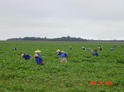 | 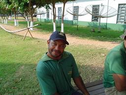 |
It PROGRAMS Q. P. I. (INTELLECTUAL AND PROFESSIONAL QUALIFICATION)
Local: Farm Ribeiro of the Heaven and Holy Faith
Matter: I Games of Integration (10 years of the Farm Ribeiro of the Heaven).
Date: 28 of March to 04 of April of 2004
Participants: 337 collaborators
In commemoration to the ten years of the Farm Ribeiro of the Heaven, were carried out the I Games of Integration.
With a lot equilibrium in all the modalities, the games were simply exciting. For it complete the emotion to premiação was composed by trophies and medals personalizados and the champions earned the right of will participate of the II Games of Integration carried out in the Farm holy Land.
The champions by modality were the following:
Soccer Seven Female
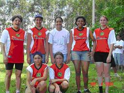
1.º Nutrimental (Holy Faith)
Soccer Seven Male
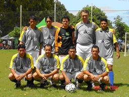
1.º SPX (Tiago - RC, Carlos - SF, Ariosvaldo - RC, Edson - RC, Cleverson - RC, Marlon - Esc., Adelino - RC, Landmarks - SF and Emilio - RC)
Volei of Sand Female
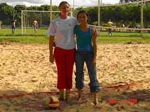
1.º Tailane / Tiara (Holy Faith)
Volei of Male Sand
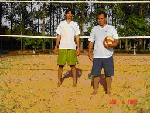
1.º Emilio/Marcio (R.HEAVEN / Esc)
Ping Pong Mixed
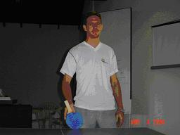
1.º Landmarks Partotski (R. Heaven)
I play of Truco Mixed
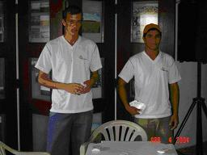
1.º Marcelo / Renan (R. Heaven)
I play of Canastra Mixed
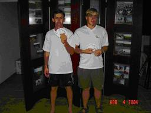
1.º Volnei / Egon (R. Heaven)
Mixed billiards/snooker
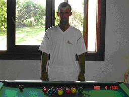
1.º Vitor (Ribeiro of the Heaven)
I play of Bocha Mixed
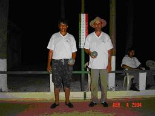
1.º Pedro / Ilvo (R. of the Heaven)
It PROGRAMS Q. P. I. (INTELLECTUAL AND PROFESSIONAL QUALIFICATION)
Local: Farm Holy Land
Matter: II Games of Integration.
Date: 06 of June of 2004
Participants: 70 collaborators
In the party of commemoration to the positive result of the safra 2003/2004, were carried out the II Games of Integration between the collaborators of the Group.
Following the example of the I Games of Integration had a lot equilibrium in all the modalities, the games were disputadíssimos. To premiação counted on trophies and medals personalizados and the participation of the champions of the I Games of Integration carried out in the Farm Ribeiro of the Heaven.
The champions by modality were the following:
Soccer Seven Male
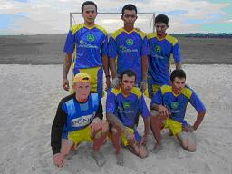
1.º Holy Land
Volei of Sand Female
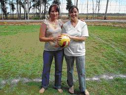
1.º Cristiane / Eliane
Volei of Male Sand
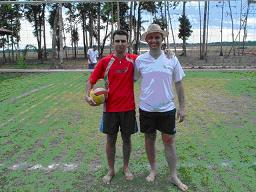
1.º Adelar / Marlon
I play of Truco Mixed
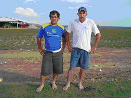
1.º Benedito and Gilberto
I play of 48
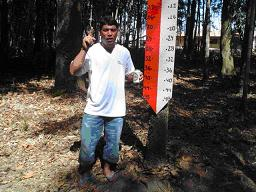
1.º Baton (Rogério)
I play of Bocha Mixed
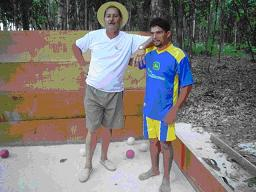
1.º Paulão and Antonio Carlos
MANUAL OF CONVIVÊNCIA
Local: Farm Holy, Holy Land Faith and Ribeiro of the Heaven.
Matter: Launching and Practical Presentation of the Manual of Convivência.
Participants: all of the Collaborators of the Group
Date: 06, 12 and 14 of June of 2004.
Objective: it Aims at the day by day, treating concretamente of attitudes corriqueiras of the collaborators that are invited it establish healthy nooses of convivência and good neighborhood.
Description: Everybody have their rights that should be respected. Everybody have also the his you will must. It is common be said: “o right of each a finishes where begins the right of another”. The fulfillment with seriousness of you will must individual and the full exercise of your rights assure the conquest of professional, social spaces and the elevation of the improvement of the conditions of life.
.
They turned out: Professional with approach in the individual objective and collective, with information concretas about their rights, you will must and objectives of the Group.
It PROGRAMS Q. P. I. (INTELLECTUAL AND PROFESSIONAL QUALIFICATION)
Local: Farm Ribeiro of the Heaven.
Matter: Confraternização In Homage to the International Day of the Woman.
Participants: 21 Collaborators, more sons.
Date: 08 of May of 2004.
Objective: it Seek to valorização and integration of the collaborators.
Description: TO confraternização counted on you vary activities, between the which we detach: Account of the Origin of the International Day of the Woman, Dynamics of Integration, Jokes, Homages of the Infants, Distribution of you Toast, Coquetel and other.
.
They turned out: THE meeting attended the expectations, since counted on the participation of all the collaborators of the Group (Unit Ribeiro of the Heaven).
It PROGRAMS Q. P. I. (INTELLECTUAL AND PROFESSIONAL QUALIFICATION)
Local: Farm Ribeiro of the Heaven.
Matter: Confraternização In Homage to the Day of the Parents.
Participants: 80 Collaborators.
Date: 08 of August of 2004.
Objective: each Integration bigger time between the families of the collaborators. Giving the duty attention and valorização to the dads of our professional family.
Description: THE event counted on the presence of the Mr. Levi Correa Godinho, that Administered Lecture with him Fear “Relacionamento Parents x Sons”, for the present couples. Fear this that was suggested by the own collaborators, seeking minimize the existing conflicts in the everyday life in family.
After lecture the infants did an exciting homage to the parents.
During the programming was served a delicious one has dinner, for the parents and family.
.
They turned out: THE meeting attended the expectations, since counted on the participation of all the families that live in the Headquarters of the Farm Ribeiro of the Heaven.
Group Vanguard 2005 © all of rights reserved